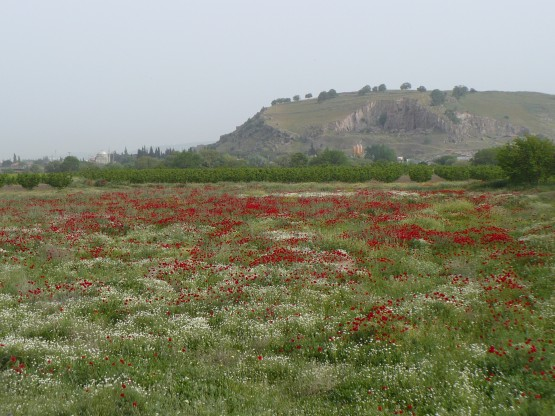

22 апреля
В половине шестого утра меня разбудил голос. Слова были турецкие, но отдаленно напоминало "Кто, здесь?". Очень хотелось ответить - конь в пальто, и спать дальше, ведь прошло всего 2.5 часа, но голос был настойчив. Вылез. Что он мне хотел сказать я так и не понял, так как общим у нас был только язык жестов.
Сразу после того, как я вылез, интонации человека сменились, и вскоре он удалился, предварительно угостив меня местным деликатесом, какими то зелеными ягодами кисло-сладкими на вкус с косточками внутри и по форме напоминающими небольшую сливу. Зачем он меня будил я так и не понял.
Постепенно начал просыпаться. Оказалось, в 2 метрах от палатки проходила грунтовка, ведущая на поле, и по ней проехало уже пару трактатов с прицепами полными турецких женщин. Похоже, выспаться мне здесь не дадут, пора собираться.
**
Кстати, о турецких женщинах. Диапазон женских типажей в турции широк необычайно - от вполне европеизированных до одетых в чадру (или как оно там называется, когда видно только глаза и нос). Причем европеизированные практически все красятся в блондинок, выглядит это забавно. В отличие от турецких мужчин, на проезжающего по деревне велосипедиста женщины не реагируют никак, собственно мне оно и не надо, но просто огромная разница в поведении. Весь ручной труд на полях женский, мужчины управляют тракторами, либо сидят, пьют чай и играют в нарды в местных кафе.
Выехал, примерно через 300 метров встретил опять своего будильника, охраняющего некий ангар, стало понятно почему, но приперся в такую рань. Поприветствовали друг друга, как старые друзья и я медленно и печально поехал дальше. Дорога мало отличалась от вчерашней, хотя и тут попадались неплохие виды.
Маки:

Ближе к обеду приключился еще один курьезный случай. Еду я через какой-то городок. По противоположной обочине идет группа детей. Начинают мне махать, ну я уже по привычке машу им в ответ, тут они резко бегут в мою сторону чего-то, крича на своем.
Малость растерявшись от неожиданности останавливаюсь, зато ребята явно не теряются, один ставит на землю ящик, хватает меня за ногу и тянет ее к ящику, одновременно начинает быстро начищать ее гуталиновой щеткой. Все происходит так быстро, что я даже рта не успел открыть. Нет ну все бы ничего, но я в шимановских контактных сандалиях из неопрена! Отдергиваю ногу, объясняю какое место я ему сейчас нагуталиню и еду дальше.
Интересно, что при этом все продолжают улыбаться и вполне доброжелательно машут мне в след. Зато проснулся.
После обеда доезжаю до окраины Бергамы. Сижу на обочине и тупо смотрю в карту, силюсь понять где тут эти самые достопримечательности. Подходит человек и на беглом таком английском начинает мне чего-то объяснять. Постепенно понимаю, что он тоже любитель велосипеда, и скоро у них будут соревнования и он их проводит. Человек явно торопится, прощаемся (как оказалось не надолго). Остаюсь со своими думками над картой. С одной стороны я планировал ехать до Чанаккале, но это еще 1 а то и 2 дня по загруженному шоссе. С другой стороны очень хотелось побывать в Бурсе и на Улудаге.
Дней остается достаточно для обоих вариантов окончания маршрута, но Улудаг перевешивает, ну, почему мне не хотелось ехать по шоссе вы понимаете.
Заехал на местный автовокзал, монументальное сооружение в 5 километрах от города. Оказалось, что прямых автобусов в Бурсу нет. Есть вариант с пересадками на маленьких автобусах. По деньгам вроде не дорого и все меня уверили, что велосипед влезет в автобус. Все решено, Улудаг!
Сил нет, но не оставлять же неосмотренным Бергамский Акрополис. Еду в город. Впереди маячит велосипедист, догоняю, о да это мой знакомый велоорганизатор. Привет. Поделился планами, спросил, где бы тут переночевать можно. Вот это было лишним! Человек серьезно озадачился организацией моего ночлега. Настолько серьезно, что далее я просто следовал за ним. Оказалось он развозит и раздает по городу плакаты предстоящего мероприятия "Бергама-бисиклет чего-то там. . ". Человек явно известный в городе, каждый второй прохожий с ним здоровался, а город не слишком маленький. Несколько раз подъезжали группы детей на велосипедах и они оживленно беседовали.
Заехали в одну гостиницу, не понравилось, заехали в офис, долго прозванивал по телефону гостиницы, в это время наши велосипеды на улице охраняли велосипедные дети.
Странное ощущение погружения в неизвестную и одновременно близкую и понятную среду. Наконец гостиница найдена, цена 15 лир с завтраком, причем это его знакомые и он уверяет что там хорошо. Едем. По пути встречаем еще 2 велотуристов из Чехии. Они едут от Сирии до Чехии и очень торопятся в путь. Жаль. Гостиница оказалась действительно хорошей. Маленькая частная гостиница, маленькие и аккуратные номера, отдельный душ, во дворе бассейн. Хозяева, скорее всего поляки, слышал их речь издалека, а со мной они говорят на приличном русском.
Долго благодарю моего добродетеля, принимаю душ и ложусь спать. Кровать с постельным бельем - великое изобретение человечества. Засыпаю с мыслью, что Бергама велосипедная столица Турции.
За день проехал 72 километра, хотя казалось не проеду и 10.